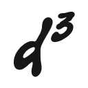

DIGDIGDIG | STOP COPY & PASTE. JUST FEEL.
A better way to dig music.
Find a track on one platform, search for it on another — without copying and pasting. You choose where to go next.
Add to Chrome01 / GENERAL
Copy less. Dig more.
Open a track list on Beatport, Soundeo, or a YouTube video with a Music card. digdigdig adds search links below each track. Click a link to open search results on the destination site in a new tab.
Use the popup to turn digdigdig on or off for the current site and choose which search destinations appear. Your choices stay saved when you turn a site off.
02 / SITES
Where you can dig
- Beatport
- Track source and search destination
- Soundeo
- Track source and search destination
- YouTube
- Music cards on video pages and search destination
- Bandcamp
- Search destination only
Links appear only where digdigdig can recognize a complete track.
03 / YOUR DATA
Your dig stays yours.
digdigdig reads track details on supported pages to build search links. It does not send them to any server. When you click a link, the destination site receives the search words in its URL. Site preferences are saved with Chrome sync storage.
No account. No analytics. No cookies. Read the full privacy policy.